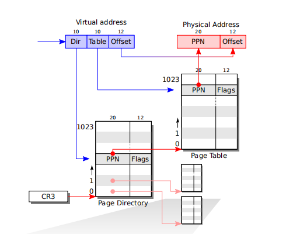
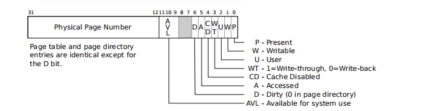
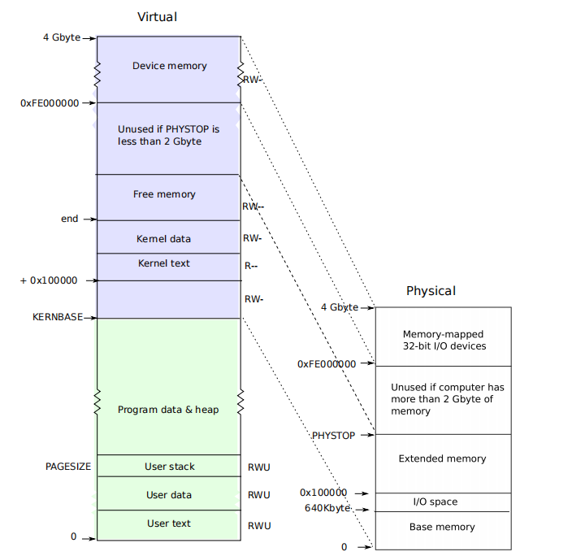

xv6 chapter2 Page Table
本文章为阅读xv6手册所做的阅读笔记，手册如下
Page Table 是操作系统控制内存的机制。页表允许xv6将不同进程的地址空间映射到一个单独的物理内存中，并且保护不同进程的内存。页表可以通过设置不同的等级来实现很多的小技巧。
xv6主要使用页表来控制地址空间和保护内存。也会使用一些简单的页表技巧：吧相同的内存映射到几段空间中，将相同的内存不止一次映射到一段地址空间（？？？这不是很正常吗），还有将一段用户栈映射到一个非映射的页表上去（意思是这段内存智能用作栈，其他内存无法映射过去，从而实现保护用户栈）。
Paging hardware
x86的指令，无论是用户指令还是内核指令都操作虚拟内存(virtual address)。机器的RAM还有物理内存都使用物理地址映射。X86页表硬件连接着这两种内存，通过将每一段虚拟内存映射到物理内存上。
一个x86页表由2^20(1048576)个PTEs(Page Table enable)组成。每一个PTE包含20 bits 的PPN(physcial page number)和一些标志位。
页表硬件通过虚拟地址的高20位来索引页表找到PTE，然后使用PTE的高20位PPN替换地址的前20位以找到物理地址。这里只是一个笼统的说法，具体操作如下图所示：

我们使用虚拟地址的高10位找到PTE，然后通过PTE中的前20位找到对应页表(二级页表)。然后再使用虚拟地址的接下来的10位找到二级页表中对应的PTE，然后将二级页表中PTE的高20位替换虚拟地址的高20位，由此转换成物理地址。
不难看出，页表在物理内存中以一个二级的树的形式存储。树根(root)是一个4096byte(=1024*32)的Page directory，这里面每一项都可以映射出一个页表，每个页表包含1024项32位的PTE。
flag选项：每个PTE包含的flag位用于告诉页表硬件相关的虚拟地址如何被允许使用。（可读/可写 等等）。如下图所示：

PTE_P表明PTE是否存在，如果指置0，则该PTE不可用，会cause a fault
PTE_W控制该页是否可写，写这个操作是由指令(instruction)完成的
PTE_U控制用户程序(user programs)是否能够使用该页，如果置0，则之一内核可以使用该页
The flags and all other page hardware related structures are defifined in mmu.h (0700).
Process address space
通过entry创建的页表拥有足够的映射去满足内核的C代码运行。但是，main函数通过调用kvmalloc(1840)函数立即转换到了一个新的页表上去，因为内核为了描述进程地址空间而做了更加精巧的设计。
每个进程(process)都有独立的页表，xv6规定页表的硬件随着进程的切换而切换页表。
如下图所示，一个进程的用户内存开始于虚拟内存的0,并且包含至KERNBASE，每个进程允许拥有2GB的内存。

Layout of the virtual address space of a process and the layout of the physical address
space. Note that if a machine has more than 2 Gbyte of physical memory, xv6 can use only the memory
that fits between KERNBASE and 0xFE00000. 这里面xv6的介绍和我们做实验的JOS可能有些出入
文件memlayout.h(0200)定义了xv6内存布局的内容，和虚拟地址转换成物理地址的宏(macros)
当一个进程向xv6请求额外的内存时，xv6首先找到空闲的物理页提供存储(storage)，然后在进程的页表中增加PTEs用于指向该页。Xv6设置PTE_U,PTE_W,PTE_P。大多数进程使用不完整个用户地址空间；
不同的进程页表将用户地址翻译到不同的物理内存页中，这样做可以保证每个进程有私有的用户空间(user memory).
Xv6包含内核运行每一个进程页表的映射。这些映射都发生在KERNBASE上面的地址（参考上图）。Xv6把虚拟地址的KERNBASE:KERNBASE+PHYSTOP映射到 0:PHYSTOP。这样的映射的原因之一是内核可以使用他自己的指令和数据。另一个原因是内核有时候需要能够写入一个给出的物理内存的页，例如：创建页表页(page table pages)；让每一个物理页出现在可以预测到的虚拟内存中可以使这种操作更方便。
一些使用内存映射IO的设备使用的物理内存从0xFE000000开始，故xv6页表包含一个对于内存设备的直接映射。因此，PHYSTOP必须小于2GB->16MB（这里16MB是指设备内存 device memory），但是依然没有解释清楚为什么PHYSTOP要小于2GB，JOS中kernbase设置为0xf0000000,正好是2G空间,原文如下：
Book-rev11.pdf page 32
Some devices that use memory-mapped I/O appear at physical addresses starting
at 0xFE000000, so xv6 page tables including a direct mapping for them. Thus,
PHYSTOP must be smaller than two gigabytes - 16 megabytes (for the device memory).
Xv6不会在大于KERNBASE的内存上设置PTE_U，所以只有内核可以使用他们
在调用system call或者interrupt的时候从用户代码切换到内核代码，这时我们掌握所有进程页表的映射会相当方便：这样的切换不需要页表的也换（只需要切换选择子等内容即可）。内核的大部分都不需要自己的页表；内核也经常会借用一些进程的页表。
To review, xv6 ensures that each process can use only its own memory. And, each process sees its memory as having contiguous virtual addresses starting at zero, while
the process’s physical memory can be non-contiguous. xv6 implements the fifirst by setting the PTE_U bit only on PTEs of virtual addresses that refer to the process’s own
memory. It implements the second using the ability of page tables to translate successive virtual addresses to whatever physical pages happen to be allocated to the process